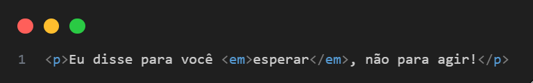
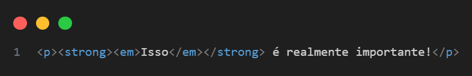
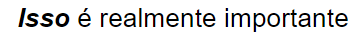

A tag <em> — "emphasis" (ênfase) no HTML5
O que é a tag <em>?
A tag <em> significa "emphasis" (ênfase). Ela é usada para dar ênfase a uma parte do texto, indicando que aquilo deve ser lido com entonação diferente. Assim como a tag <strong>, ela também tem um valor semântico.
Exemplo
Resultado do Exemplo
Função principal
- Semântica: Indica que o texto dentro da tag deve ser lido com ênfase leve ou diferente.
- Visual padrão: Normalmente, o texto aparece em itálico.
- Acessibilidade: Leitores de tela geralmente leem o texto com uma entonação alterada, dando destaque vocal.
Diferença entre <em> e <i>
| Tag | Função Principal | Semântica? | Visual padrão |
|---|---|---|---|
<em>
|
Dá ênfase no tom de leitura | Sim | Itálico |
| <i> | Apenas deixa o texto em itálico | Não | Itálico |
Use <em> quando a forma de dizer algo é importante, e <i> apenas para visual.
Níveis de ênfase
Resultado
Boas práticas
-
Use
<em>para ênfases naturais de fala. -
Evite usar
<em>só para deixar o texto em itálico — para isso, prefira<i>ou CSS. - Mantenha o uso semântico: pense em como o texto seria falado.
Comparação rápida entre <em>, <strong>, <i> e <b>
| Tag | Finalidade | Visual padrão | Semântica |
|---|---|---|---|
<strong>
|
Ênfase forte / impôrtancia crítica | Negrito | Sim |
<em>
|
Ênfase leve / entonação de fala | Itálico | sim |
<b>
|
Destaque visual (sem sentido extra) | Negrito | Não |
<i>
|
Destaque visual (ex: nomes latinos) | Itálico | Não |